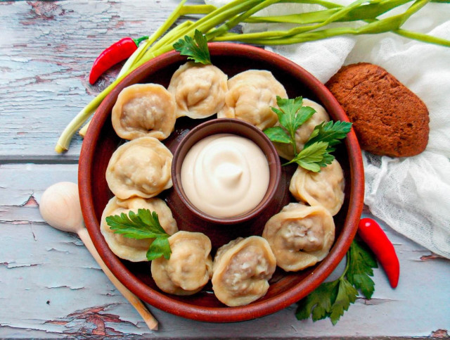

ООО "Русский дар" 
Вернутся в начальный раздел | Вернутся на главную страницу
Оборудование: нож, миска большая, мясорубка, скалка, холодильник и ложка столовая.

Подготовьте необходимые ингредиенты. Можете взять уже готовый фарш из свинины и говядины, но лучше всего сделайте его сами. Лук очистите от шелухи, помойте и обсушите.

В глубокую миску переложите свиной фарш и фарш из говядины.

Очищенный репчатый лук нарежьте и прокрутите в мясорубке с мелкой решеткой. Лук можете взять любой на ваше усмотрение. Но чем больше лука, тем готовый фарш будет сочнее и мягче. Но все зависит от вашего вкуса.

Все посолите, поперчите и хорошенько перемешайте. По мне лучше обычного черного молотого перца нет, но вы можете взять и белый или зеленый молотый перец. Накройте миску крышкой и уберите в холодильник на 30 минут, чтобы мясо созрело.

Пока мясо в холодильнике, сделайте тесто. Для этого в глубокую миску налейте воду комнатной температуры, чтобы рукам было комфортно. Разбейте в миску сырое яйцо, добавьте масло, соль и перемешайте все до однородной массы.

Просейте в миску к яйцам большую часть муки и начните замешивать тесто, подсыпая потихоньку муку. Ориентируйтесь на консистенцию теста, а не на объем муки.

Тесто должно быть эластичным, нежным, не липнуть к рукам. Готовое тесто соберите в ком и накройте полотенцем или пленкой. Оставьте его на кухонном столе на 20 минут.

Присыпьте стол небольшим количеством муки и переложите на него тесто. Разделите тесто на части, из каждой скатайте толстый жгут. Затем нарежьте их на небольшие кусочки - по числу пельменей. Пока будете возиться с одной частью теста, оставшееся накрывайте полотенцем, чтобы оно не подсыхало.

Раскатайте нарезанные кусочки теста в тонкие лепешки. Желательно, чтобы они были одинаковые и по возможности круглые.

На каждую раскатанную лепешечку выложите ложкой мясной фарш.

Соедините противоположные края лепешки и плотно слепите их. Получатся вот такие вареники.

Затем соедините противоположные кончики каждого вареника и крепко прижмите. У нас получаются вот такие круглые пельмешки. Если сделали их много, то плоскую поверхность присыпьте мукой и уложите пельмени в один слой и не вплотную. Посыпьте снова мукой и отправьте их в морозилку для заморозки. После разложите по пакетам и снова уберите в морозильную камеру.

Поставьте на плиту кастрюлю с водой, доведите воду до кипения, посолите. Кладите в кипящую воду пельмени по одному. Перемешайте осторожно и варите на среднем огне до готовности.

Шаг 1, Шаг 2, Шаг 3, Шаг 4, Шаг 5, Шаг 6, Шаг 7, Шаг 8, Шаг 9, Шаг 10, Шаг 11, Шаг 12,Шаг 13.